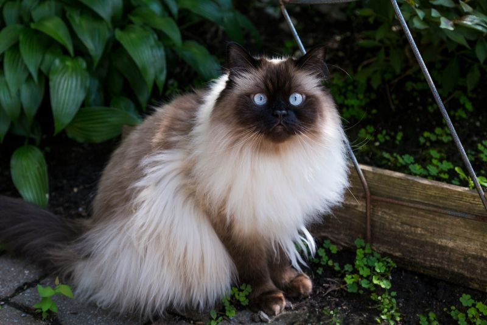

Kryssia Campos / Getty Images
Like the Persian, the Himalayan cat is considered a sub-breed in some cat associations and a separate breed in others. Himalayans were bred from crossing Persians and Siamese to achieve their color points. They love attention and affection from their owners, have sweet personalities, and are playful.
Breed Overview
HEIGHT:10 to 12 inches
WEIGHT 9 to 12 pounds
COAT AND COLOR: Dense undercoat with a long overcoat that comes in pointed colors and patterns in gray, blue, chocolate, lilac, and cream
LIFE EXPECTANCY:Up to 18 years
more image:

